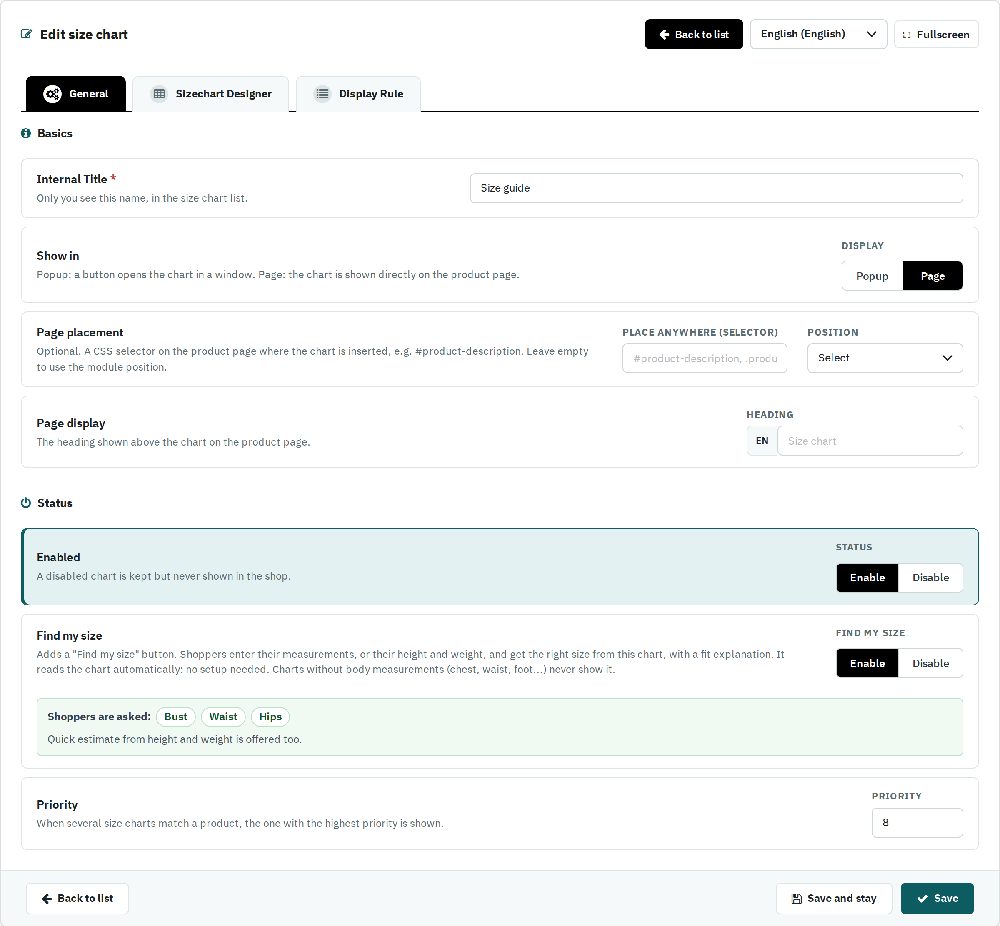

| Field | What it does |
|---|---|
| Show in | Popup: a button opens the chart in a window. Page: the chart is shown directly on the product page. |
With Show in = Page, two more settings appear and the Popup Button tab is hidden:

| Field | What it does |
|---|---|
| Page placement | Optional. A CSS selector on the product page where the chart is inserted, e.g. #product-description, and whether it goes before or after that element or its content. Leave it empty to use the module position. |
| Page display — Heading | The heading shown above the chart on the product page, per language. Empty: the word Size chart in the shopper's language. |